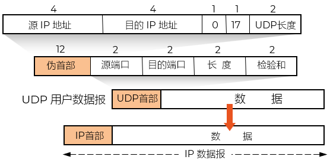
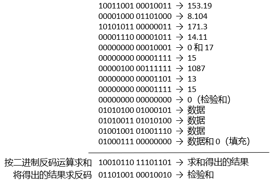

用户数据报
@UDP- Joke Time
- 来一碗牛肉面
- 不要跟它讲秘密
- 不要跟它吵架
- 尽力而为（Best Effort），其余随缘
- I know this great UDP joke but you might not get it.
- 概述 Overview
- 用户数据报 UDP - User Datagram Protocol
- 无连接 connectionless
不需要建立连接
也不维护连接状态
- 不可靠 unreliable
不重传
不确认
不排序
没有流量控制
没有拥塞控制
不保证交付 Does not guarantee delivery
存在丢包
最大努力交付 Best effort delivery
- 不分段 segmenting
- 不重组 reassembling
- 不实现序列号 sequence numbers
- 首部开销小：最少8个字节，仅包括首部
- 支持单播、组播、多播
- 常见应用 Application
- DNS - Domain Name System，域名系统
- DHCP - Dynamic Host Configuration Protocol，动态主机配置协议
- SNMP - Simple Network Management Protocol，简单网络管理协议
- TFTP - Trivial File Transfer Protocol，简单文件传输协议
- NFS - Network File System，网络文件系统；早期版本
- VoIP - Voice over IP及实时音视频通信
- 物联网 - ioT
- 流媒体 - Streaming Media
- 多播/组播应用 - Multicast
- 游戏通信 - Online Gaming

简单方便；不可靠
U·D·P = Ultra Delightful Prankster - 超可爱捣蛋鬼
不可靠 ≠ 不能用
UDP 数据报 Datagram
- UDP 是面向报文 Message 的协议，一次发送一个完整的报文
- UDP 将应用层的报文 Message/Data 加上 UDP 首部 Header后形成 UDP datagram
- 首部固定 8byte - 开销小
- 源端口 Source Port
- 2 Bytes
- 在需要对方回信时选用。不需要时可用全 0
- 目的端口 Destination Port
- 2 Bytes
- 终点交付报文时必须使用
- 长度 Length
- 2 Bytes
- UDP 用户数据报的长度，包括首部和数据
- 最小值是 8（仅有首部）
- 数据报的长度是 0x0020 → (0020)16 = 32 bytes
- 数据报的首部是 8 bytes
- 所以数据报的数据部分：32 - 8 = 24 bytes
- 检验和 CheckSum
- 2 Bytes
- 检测 UDP 用户数据报在传输中是否有错。有错就丢弃
- 伪首部：源IP地址、目标IP地址、IP协议号17、UDP长度和填充
- 校验内容：伪首部 + UDP首部 + UDP数据
- 发送方
填上伪首部：不是真正发送的数据，仅用于 UDP 检验和的计算
全0填充校验和字段；全0填充数据部分
伪首部+首部+数据三部分采用二进制反码求和
求和结果填入校验和字段并发送UDP报文
注意：最高进位必须加进去
- 接收方
填上伪首部
伪首部+首部+数据三部分采用二进制反码求和
结果全为1则无差错；否则丢弃
- 数据准备
- 红色数字部分：伪首部保留字段，必须为 0
- 绿色数字部分：校验和预填充，求得结果后再回填
- 蓝色数字部分：0bit 填充，保证总长度为偶数字节，以便 16 位求和
- 以2个字节为单位计算
- 报文大小
- 若报文太长，IP 层在传送时可能要进行分片，形成多个 IP 分组 Packets
- 若报文太短，会使 IP 数据报的首部的相对长度太大，降低 IP 层的效率
- 受网络层 1500 bytes的 MTU 限制，建议应用层报文大小 ≤ 1472 bytes，避免分片

| 2 Bytes | 2 Bytes | 2 Bytes | 2 Bytes | |
| 源端口 | 目标端口 | 长度 | 校验和 | 数据 |
| Header | Data | |||


| 153.19.8.104 | |||
| 171.3.14.11 | |||
| 00000000 | 17 | 15 = 8+7 | |
| 1087 | 13 | ||
| 15 = 8+7 | 00000000 00000000 | ||
| data | data | data | data |
| data | data | data | 00000000 |

工作模式 Mode
- 一对多通信 P2MP
- 一个源端口 → 多个目的端
单播 Unicast- 循环发送
广播 Broadcast - 向所有主机发送
组播 Multicast - 推荐；高效
- 所有数据包都从同一个源 IP + 源端口发出
- 接收方看到的源地址一致，便于回信
- 典型应用
RIP组播
Web 浏览器访问多个服务
视频直播推流
广播通知系统

一对多通信 - 多对一通信 MP2P
- 多个源端口 → 一个目的端口
- 多个客户端各自创建 UDP socket（可能使用不同源端口），向同一个服务器 IP:Port 发送数据
- 典型应用
多人聊天室/即时通讯
文件上传服务
在线游戏服务器
物联网设备上报数据

多对一通信
Summary & Homework
- Summary
- UDP 特点
- UDP 报文格式
- UDP 应用
- Homework
- 翻译
Source Port：an optional field, when meaningful, it indicates the port of the sending process, and may be assumed to be the port to which a reply should be addressed in the absence of any other information.
If not used, a value of zero is inserted.
Destination Port：has a meaning within the context of a particular internet destination address.
Length is the length：in octets of this user datagram including this header and the data. This means the minimum value of the length is eight.
Checksum：the 16-bit one's complement of the one's complement sum of a pseudo header of information from the IP header, the UDP header, and the data, padded with zero octets at the end (if necessary) to make a multiple of two octets.
- Extending Reading